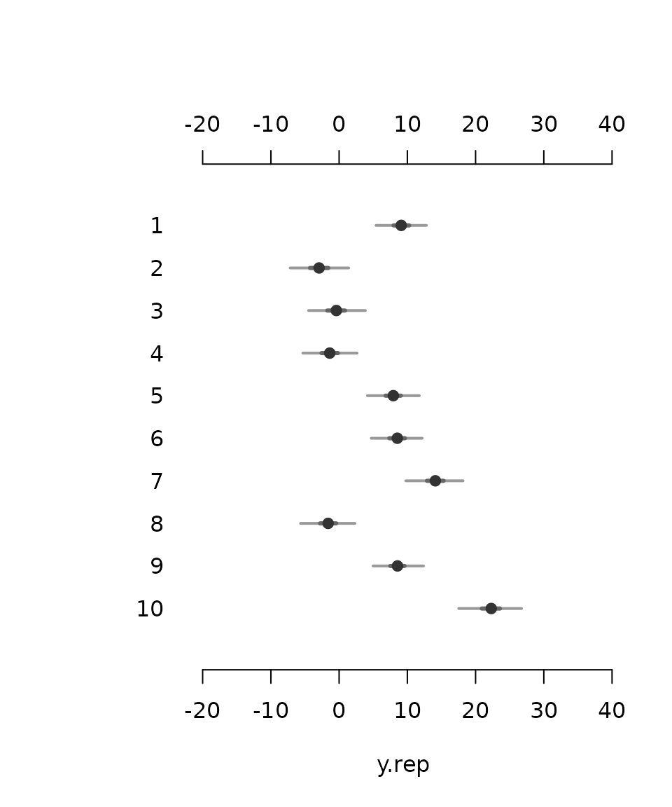
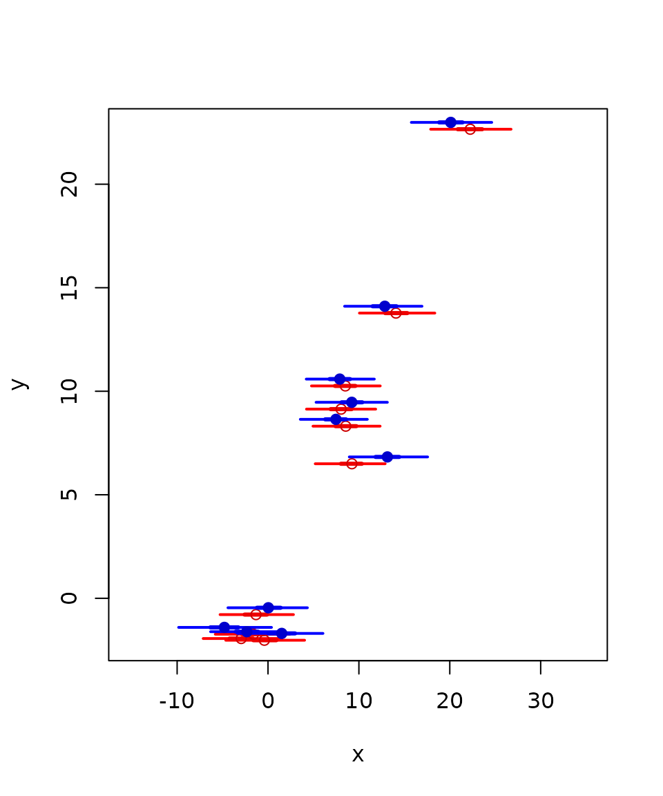
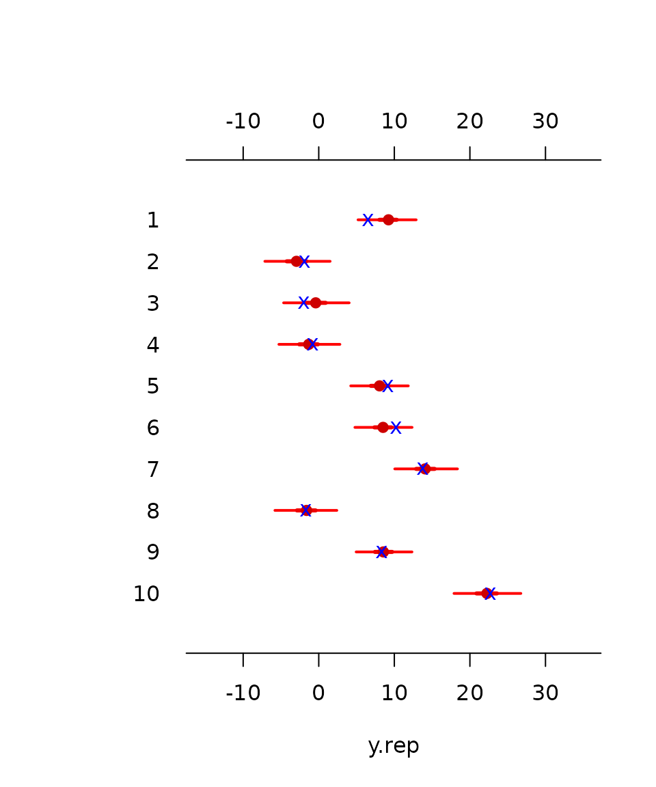
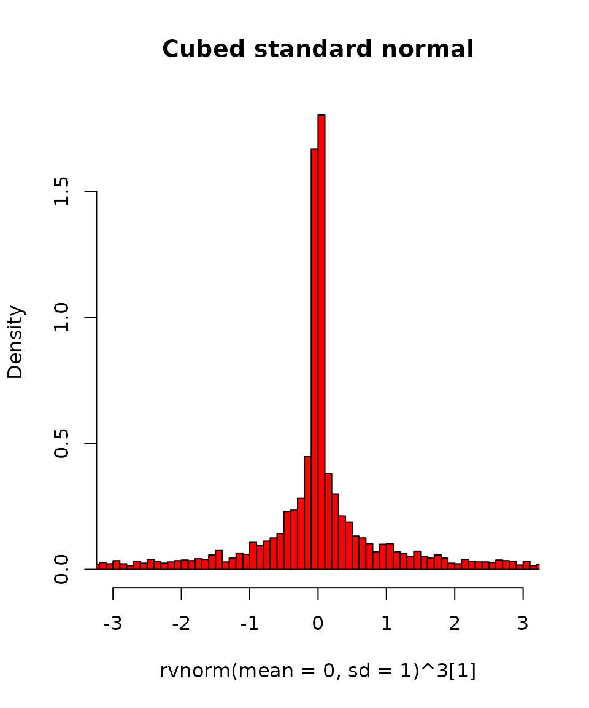
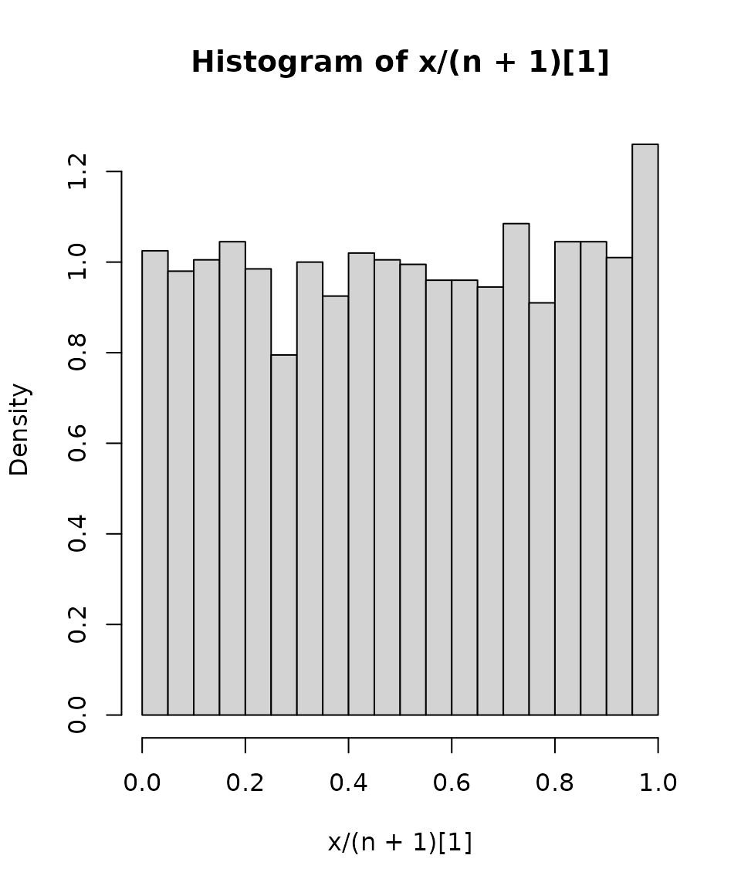

vignettes/rv-doc.Rmd
rv-doc.RmdEdited by Jemma Stachelek: 12 February, 2022
rv is an implementation of a simulation-based random variable object class for R, originally introduced in Kerman and Gelman (2007).
rv implements a new class of vectors that contain a ‘hidden dimension’ of simulations in each scalar component. These rv objects can be manipulated much like any numeric vectors, but the arithmetic operations are performed on the simulations, and summaries are calculated from the simulation vectors.
rv is convenient for manipulating posterior simulations obtained from MCMC samplers, for example using Umacs (Kerman 2005) or R2WinBUGS (Sturtz, Ligges, and Gelman 2005) (the package provides a coercion method to convert bugs objects to rv objects.)
The paper by Kerman and Gelman (2007) introduces the principles of the design of random variable objects. This document is a short overview of some of the commands provided by the package rv. At the end of the document there is a short description of the implementation.
Install the package rv (version 2.1.1 or higher) using the Package Installer command in R (from the menu), and load the package using,
The rv objects (or, “random vectors”) that we manipulate usually come from a Markov chain sampler. To introduce some commands quickly, we will instead use some random vectors generated by random-vector generating functions which sample directly from a given (standard) distribution.
First, we will set the number of simulations we use. We choose 4000 simulations per each scalar component of a random vector:
setnsims(4000)
#> [1] 4000We will not usually change this value during our session, unless we want to repeat our analysis with more (or fewer) simulations. The default value is 4000, set whenever the package is loaded for the first time in the workspace; therefore this is not strictly a necessary step to do every time we start the package.
To draw a random Gaussian (Normal) vector of length 5 with corresponding means \(1,2,3,4,5\) and s.d. 1,
x <- rvnorm(mean=1:5, sd=1)In effect, the object x now contains five vectors of length \(4000\), drawn (internally) using rnorm, but we see x as a vector of length 5.
The length of the vector is derived from the length of the mean vector (and the sd vector), and it is not necessary to specify a parameter “n”.
To summarize the distribution of x by viewing quantiles, means, and s.d.’s, we only type the name of the object at the console:
x
#> mean sd 1% 2.5% 25% 50% 75% 97.5% 99% sims
#> [1] 0.98 0.98 -1.35 -0.926 0.31 1 1.7 2.9 3.2 4000
#> [2] 1.98 1.01 -0.40 0.015 1.28 2 2.7 3.9 4.3 4000
#> [3] 3.02 0.99 0.76 1.059 2.35 3 3.7 5.0 5.2 4000
#> [4] 4.02 1.01 1.64 1.983 3.35 4 4.7 5.9 6.3 4000
#> [5] 4.99 0.97 2.77 3.144 4.33 5 5.7 6.9 7.2 4000Similarly we can draw from Poisson (rvpois) Gamma, (rvgamma), Binomial (rvbinom):
y <- rvpois(lambda=10)To extract the means, we use rvmean, the s.d.’s, we use rvsd, the minimum, rvmin, the maximum rvmax, and the quantiles, we use rvquantile. The componentwise medians are also obtained by rvmedian:
rvmean(x)
#> [1] 0.98 1.98 3.02 4.02 4.99
rvsd(x)
#> [1] 0.98 1.01 0.99 1.01 0.97
rvquantile(x, c(0.025,0.25,0.5,0.75,0.975))
#> 2.5% 25% 50% 75% 97.5%
#> [1,] -0.926 0.31 1 1.7 2.9
#> [2,] 0.015 1.28 2 2.7 3.9
#> [3,] 1.059 2.35 3 3.7 5.0
#> [4,] 1.983 3.35 4 4.7 5.9
#> [5,] 3.144 4.33 5 5.7 6.9
rvmedian(x)
#> [1] 1 2 3 4 5
rvmin(y)
#> [1] 1
rvmax(y)
#> [1] 24For convenience, there is an alias E(...) for rvmean(...) which gives the “expectation” of a random vector.
Since the random vectors are all represented by simulations, the expectation and all other functions that we compute are just numerical approximations. Generating a “standard normal random variable” with z <- rvnorm(n=1, mean=0, sd=1) will not have an expectation exactly zero. Our main purpose here is to handle simulations, so the answers will be approximate and necessarily involve a simulation error.
Since rv objects work just like vectors, we can extract and replace components by using the bracket notation. Here we replace the 3rd and 4th components with random variables having (an approximate) binomial distributions:
x[3:4] <- rvbinom(size = 1, prob = c(0.1, 0.9))
x[3:4]
#> mean sd 1% 2.5% 25% 50% 75% 97.5% 99% sims
#> [1] 0.1 0.30 0 0 0 0 0 1 1 4000
#> [2] 0.9 0.31 0 0 1 1 1 1 1 4000The “mean” column now shows the estimate of the expectation of the two indicator functions we generated.
To “impute” a random vector in a regular numeric vector, we can either first turn the constant vector into an rv object:
y <- as.rv(1:5)
y[3:4] <- x[3:4]
y
#> mean sd 1% 2.5% 25% 50% 75% 97.5% 99% sims
#> [1] 1.0 0.00 1 1 1 1 1 1 1 1
#> [2] 2.0 0.00 2 2 2 2 2 2 2 1
#> [3] 0.1 0.30 0 0 0 0 0 1 1 4000
#> [4] 0.9 0.31 0 0 1 1 1 1 1 4000
#> [5] 5.0 0.00 5 5 5 5 5 5 5 1or, use the special function impute that can handle regular vectors and rv objects:
y <- (1:5)
impute(y, 3:4) <- x[3:4]
y
#> mean sd 1% 2.5% 25% 50% 75% 97.5% 99% sims
#> [1] 1.0 0.00 1 1 1 1 1 1 1 1
#> [2] 2.0 0.00 2 2 2 2 2 2 2 1
#> [3] 0.1 0.30 0 0 0 0 0 1 1 4000
#> [4] 0.9 0.31 0 0 1 1 1 1 1 4000
#> [5] 5.0 0.00 5 5 5 5 5 5 5 1The non-random components appearing as “constants,” or in other words, random variables with point-mass distributions (and therefore having a zero variance).
Standard numerical functions can be applied directly to random vectors. To find a summary of the distribution of the function \(1/(1+\exp(-x_1))\), we would write,
1/(1 + exp(-x[1]))
#> mean sd 1% 2.5% 25% 50% 75% 97.5% 99% sims
#> [1] 0.69 0.18 0.21 0.28 0.58 0.73 0.84 0.95 0.96 4000Or of the function of almost anything we like:
To simulate the order statistics of a random vector x, we can use sort(x), min(x), max(x).
x <- rvpois(lambda=1:5)
x
#> mean sd 1% 2.5% 25% 50% 75% 97.5% 99% sims
#> [1] 0.98 1.0 0 0 0 1 2 3 4 4000
#> [2] 1.98 1.4 0 0 1 2 3 5 6 4000
#> [3] 2.97 1.7 0 0 2 3 4 7 8 4000
#> [4] 3.96 2.0 0 1 3 4 5 8 9 4000
#> [5] 5.03 2.2 1 1 3 5 6 10 11 4000
sort(x)
#> mean sd 1% 2.5% 25% 50% 75% 97.5% 99% sims
#> [1] 0.61 0.69 0 0 0 0 1 2 2 4000
#> [2] 1.62 0.91 0 0 1 2 2 3 4 4000
#> [3] 2.72 1.07 1 1 2 3 3 5 5 4000
#> [4] 4.02 1.29 2 2 3 4 5 7 7 4000
#> [5] 5.96 1.83 3 3 5 6 7 10 11 4000
min(x)
#> mean sd 1% 2.5% 25% 50% 75% 97.5% 99% sims
#> [1] 0.61 0.69 0 0 0 0 1 2 2 4000
max(x)
#> mean sd 1% 2.5% 25% 50% 75% 97.5% 99% sims
#> [1] 6 1.8 3 3 5 6 7 10 11 4000Note: the order method is not implemented.
rv objects behave like numerical vectors in R; thus you can set their dimension attributes to make them appear as arrays, and also use the matrix multiplication operator. (Note: \%**\%} performs the matrix multiplication, ensuring that non-rv andrvobjects get properly multiplied. Using%*%` does not work if the
matrix or vector on the left is not an rv object.)
p <- runif(4) # Some prior probabilities.
y <- rvbinom(size=1, prob=p) # y is now a rv of length 4.
dim(y) <- c(2,2) # Make y into a 2x2 matrix.
y
#> mean sd 1% 2.5% 25% 50% 75% 97.5% 99% sims
#> [1,1] 0.3435 0.47 0 0 0 0 1 1 1 4000
#> [2,1] 0.1010 0.30 0 0 0 0 0 1 1 4000
#> [1,2] 0.4225 0.49 0 0 0 0 1 1 1 4000
#> [2,2] 0.0065 0.08 0 0 0 0 0 0 0 4000
y %**% y
#> mean sd 1% 2.5% 25% 50% 75% 97.5% 99% sims
#> [1,1] 0.385 0.51 0 0 0 0 1 1 2 4000
#> [2,1] 0.032 0.18 0 0 0 0 0 1 1 4000
#> [1,2] 0.147 0.36 0 0 0 0 0 1 1 4000
#> [2,2] 0.048 0.21 0 0 0 0 0 1 1 4000The componentwise summary functions such as E (rvmean) and rvsd return the summaries with the correct dimension attribute set:
E(y)
#> [,1] [,2]
#> [1,] 0.34 0.4225
#> [2,] 0.10 0.0065Applying logical operators gives indicators of events. If z is a standard normal random variable the indicator of the event \(\{z>1\}\) is given by the statement z>1:
z <- rvnorm(1)
z > 1
#> mean sd 1% 2.5% 25% 50% 75% 97.5% 99% sims
#> [1] 0.14 0.35 0 0 0 0 0 1 1 4000We can also use the convenience function Pr(...) to compute the estimates of the expectation of these indicators:
Pr(z > 1)
#> [1] 0.14Of course, we can find joint events as well and computer their probabilities similarly. To find the probability that \(Z_1>Z_2^2\), where both \(Z_1\) and \(Z_2\) are independent standard normal, we’d type
We can even compute probabilities of intersections or unions of events,
We can use random vectors, regular vectors, standard elementary functions, logical operations in any combination as we wish.
Example. Let \(z_1,z_2\) be standard normal, and let \(y_1=\exp(z_1), y_2=y_1\exp(z_2)\).
Compute the expectation of \(x=(y_1-1)\mathrm{1}_{y_1>1}\mathrm{1}_{y_2>1}\) and find the probability \(\Pr(x>1)\).
We can generate posterior simulations from a classical regression model, using the standard assumptions for the priors. For convenience there is a function posterior to do this.
n <- 10
## Some covariates
X <- data.frame(x1=rnorm(n, mean=0), x2=rpois(n, 10) - 10)
y.mean <- (1.0 + 2.0 * X$x1 + 3.0 * X$x2)
y <- rnorm(n, y.mean, sd=1.5) ## n random numbers
D <- cbind(data.frame(y=y), X)
## Regression model fit
fit <- lm(y ~ x1 + x2, data=D)The Bayesian estimates (posterior distributions) are represented by,
Post <- posterior(fit)
Post
#> $beta
#> name mean sd 1% 2.5% 25% 50% 75% 97.5% 99% sims
#> [1] (Intercept) 1.1 0.80 -0.91 -0.45 0.56 1.0 1.5 2.7 3.1 4000
#> [2] x1 2.0 0.71 0.19 0.57 1.58 2.0 2.4 3.4 3.8 4000
#> [3] x2 2.9 0.22 2.33 2.43 2.77 2.9 3.0 3.3 3.4 4000
#>
#> $sigma
#> mean sd 1% 2.5% 25% 50% 75% 97.5% 99% sims
#> [1] 1.7 0.54 0.91 0.97 1.3 1.6 1.9 3 3.5 4000Continuing the previous example, we’ll resample from the sampling distribution of \(y\) using the posterior simulations we got. We can use the function rvnorm to do this, since it accepts random vectors as arguments. Rather than think rvnorm to draw normal random vectors, it rather “samples from the normal model.” The vector will be normal given (constant) mean and s.d., but if the mean and s.d. are not constants, the resulting vector will not be normal.
sigma <- Post$sigma
betas <- Post$beta
M <- model.matrix(fit)
y.rep <- rvnorm(mean=M %**% betas, sd=sigma)
mlplot(y.rep) # Summarize graphically. Note also that sigma is also an rv object.
The matrix multiplication statement returns a random vector of length :
M %**% betas
#> name mean sd 1% 2.5% 25% 50% 75% 97.5% 99% sims
#> [1] 1 9.14 0.74 7.2 7.6 8.7 9.1 9.58 10.65 11.07 4000
#> [2] 2 -2.95 1.24 -6.1 -5.4 -3.7 -3.0 -2.20 -0.41 0.18 4000
#> [3] 3 -0.41 1.19 -3.3 -2.7 -1.1 -0.4 0.27 2.05 2.61 4000
#> [4] 4 -1.34 1.00 -3.7 -3.3 -1.9 -1.3 -0.76 0.76 1.20 4000
#> [5] 5 7.99 0.56 6.6 6.9 7.6 8.0 8.33 9.14 9.41 4000
#> [6] 6 8.49 0.62 6.9 7.3 8.1 8.5 8.86 9.76 10.12 4000
#> [7] 7 14.06 1.01 11.4 12.0 13.5 14.1 14.67 16.10 16.58 4000
#> [8] 8 -1.63 0.91 -3.8 -3.4 -2.2 -1.6 -1.08 0.24 0.76 4000
#> [9] 9 8.53 0.63 7.0 7.3 8.2 8.5 8.91 9.82 10.18 4000
#> [10] 10 22.25 1.33 18.7 19.4 21.5 22.3 23.05 24.90 25.40 4000Thus all the uncertainty in the mean estimate \(X\beta\) and the residual s.d. estimate \(\sigma\) is propagated when the replicated vector \(y^\mathrm{rep}\) is generated. In effect, this single line of code thus will in fact draw from the distribution \(p({y}^\mathrm{rep}|y)=\int\int \mathrm{Normal}({y}^\mathrm{rep}|\mu,\sigma)p(\mu,\sigma|y)\mathrm{d}\mu\mathrm{d}\sigma.\)
For convenience, there is a generic method rvpredict to generate replications and predictions:
## Replications
y.rep <- rvpredict(fit)We can also generate predictions at some other covariate values:
## Predictions at the mean of the covariates
X.pred <- data.frame(x1=mean(X$x1), x2=mean(X$x2))
y.pred <- rvpredict(fit, newdata=X.pred)We can also perturb (add uncertainty to) the covariate `x1}, then predict again.
X.rep <- X
X.rep$x1 <- rnorm(n=n, mean=X.rep$x1, sd=sd(X.rep$x1))
y.pred2 <- rvpredict(fit, newdata=X.rep)
y.pred2
#> mean sd 1% 2.5% 25% 50% 75% 97.5% 99% sims
#> [1] 13.143 2.1 8.1 8.9 11.833 13.134 14.4 17.56 18.7 4000
#> [2] -2.326 2.0 -7.5 -6.3 -3.556 -2.333 -1.1 1.65 2.6 4000
#> [3] 1.479 2.4 -4.5 -3.4 0.024 1.508 3.0 6.05 7.1 4000
#> [4] 0.053 2.1 -5.3 -4.4 -1.213 0.037 1.4 4.34 5.3 4000
#> [5] 9.236 2.0 4.3 5.3 8.095 9.214 10.4 13.13 14.3 4000
#> [6] 7.907 1.8 3.4 4.2 6.778 7.895 9.0 11.70 12.5 4000
#> [7] 12.812 2.2 7.3 8.4 11.506 12.850 14.1 16.95 18.0 4000
#> [8] -4.792 2.6 -11.1 -9.8 -6.347 -4.801 -3.3 0.39 1.9 4000
#> [9] 7.426 1.9 2.4 3.6 6.296 7.472 8.6 10.93 12.0 4000
#> [10] 20.114 2.2 14.5 15.8 18.832 20.110 21.4 24.62 25.9 4000Graphical summaries are still in development, but it is now possible to plot a scatterplot with a regular vector against a random vector, showing the 50% and 95% uncertainty intervals along with the median, using plot(y,x,...)}, whereyis not random butxis. or we can show two random scalars plotted as a 2-dimensional scatterplot withplot(x[1],x[2],…)}.
To illustrate, let us plot the predicted intervals of the previous example, along with the data points.
Plot the predictions against y in red color; then plot the perturbed predictions with blue color.

Note that the function method needs to be called explicitly to be able to plot constants vs. rv objects. If the first argument of plot(x, ...) is an rv object, one can call plot
Or, we can show a random vectors as horizontal intervals using mlplot:

A histogram of the simulations of a random scalar x[1]}, can be plotted withrvhist}:

This code simulates 200 iterations of the well-known P'olya’s urn problem. The parameter x/(n+1) for the Bernoulli-variate-generating function rvbern(...) is random: we can generate random variables using random parameters without much trickery; our code looks therefore more natural.
The model: \[\begin{eqnarray} \quad X_0 &= 1 \\ \quad X_n-X_{n-1}|X_{n-1} &\sim \text{Bernoulli}( X_{n-1}/(n+1) ) \end{eqnarray}\]
The R code:
x <- 1
for (n in 1:100) {
x <- x + rvbern(n=1, prob=x / (n + 1))
}
rvhist(x / (n + 1)) # Histogram
We can see that the distribution is close to uniform, which is the limiting distribution in this case.
To extract the simulation matrix embedded in an rv object, use sims:
It is our convention to have the columns represent the random vector and the rows represent the draws from the joint distribution of the vector.
A matrix or a vector of simulations is converted into an rv object by rvsims. Continuing the above example, we’ll convert the matrix back to an rv object.
y <- rvsims(s)You can verify that all(sims(y)==s) returns . % TRUE Also note that length(y) gives , since y is “just a vector.”
The function as.rv(x) coerces objects to rv objects. However, this does not mean that matrices of simulations are turned into rv objects—this is done with rvsims, as explained above. as.rv(rnorm(4000)) would return a random vector of length 4000, where each component has zero variance (and one single simulation). You probably mean rvsims(rnorm(4000)), but the correct way to generate this object is rvnorm(1).
R2WinBUGS (Sturtz, Ligges, and Gelman 2005) is an interface for calling WinBUGS within R, and obtaining the simulations as an R matrix (that is embedded in a “bugs” object). If bugsobj is the bugs object returned by the bugs(...) function call, then as.rv will coerce it into a list of random vectors, split by the parameter names: y <- as.rv(bugsobj)
rv is written in “S3” style object-oriented R rather than using the methods (“S4”) package. The main reason was speed, the secondary consideration was the ease of writing new functions.
The main class is called rv. Most functions expecting an rv object have names starting with rv. For example, rvnorm, rvmean, etc.
The package also features rv-specific methods extending the basic numeric vector classes, e.g. c.rv, plot.rv, etc. However, the method dispatch in R will not call the rv class method if the first object in the argument list is not an rv object; for example, c(...) will not call c.rv in the following case: suppose that x is an object of class rv and k <- 10. Then c(k, x) will not call c.rv. To ensure the proper result, wrap the first element in as.rv:
c(as.rv(k), x) will produce a proper random vector.
This program is a work in progress, and it may contain bugs. Many new features will be eventually (and hopefully) added.
For information about random variables in R, please refer to Kerman and Gelman (2007). For information about Umacs (Universal Markov chain sampler) please refer to Kerman (2005).
Kerman, Jouni. 2005. “Umacs A Universal Markov Chain Sampler.”
Kerman, Jouni, and Andrew Gelman. 2007. “Manipulating and Summarizing Posterior Simulations Using Random Variable Objects.” Statistics and Computing 17 (3): 235–44.
Sturtz, Sibylle, Uwe Ligges, and Andew Gelman. 2005. “R2WinBUGS A Package for Running WinBUGS from R.” Journal of Statistical Software 12 (3): 1–16.